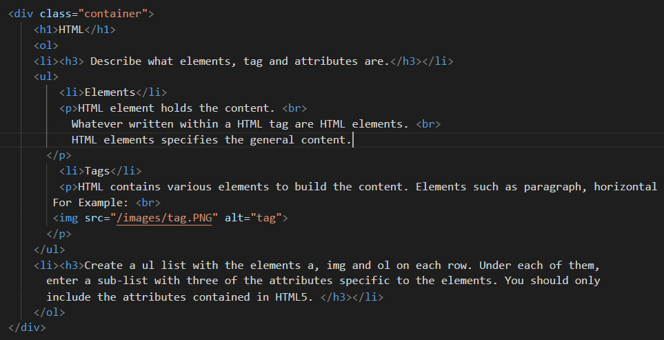
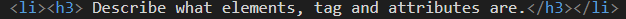
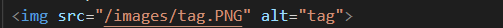

HTML-elementet innehåller innehållet.
Vad som än skrivs i en HTML-tagg är HTML-element.
HTML-element anger det allmänna innehållet.
Till exempel:

HTML innehåller olika element för att bygga innehållet. Element som stycke, horisontella linjer och rubriker används för att utveckla strukturen på alla webbsidor. Programmerare kan inte skriva dessa element direkt på webbplatsen. De måste
använda taggar för att skriva specifika element till webbsidan. De flesta element har en starttagg och en sluttagg. Med andra ord är elementen inneslutna i start- och sluttaggen.
Till exempel:

HTML-attribut används för att beskriva egenskaperna hos ett HTML-element i detalj.
HTML-attribut finns bara i starttaggen.
HTML-attribut anger olika ytterligare egenskaper till det befintliga HTML-elementet.

I det här fallet är src och alt attribut